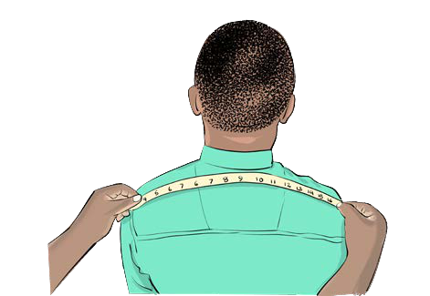

Kuzidisha namba zenye desimali kwa desimali
Kazi ya kufanya ya kwanza
Kupima shati

Hatua
1. Tumia kipimo cha urefu, pima kifua mbele ya shati.
Kisha zidisha kwa mbili ili kupata kipimo kamili cha kifua.
2. Pima upana wa mabega, pima moja kwa moja kutoka mshono wa bega moja hadi jingine.
3. Pima urefu wa mkono, anza kupima juu kwenye mshono wa bega, shuka hadi mwisho wa mkono wa shati (fuata mviringo kulingana na mkono).
4. Pima urefu wa shati, pima kutoka sehemu ya juu ya bega (karibu na kola) hadi kwenye kiuno.
5. Pima ukubwa wa shingo, pima kutoka kitufe cha katikati cha kola hadi mwisho wa tundu la kitufe.
6. Pima kiuno cha shati, pima moja kwa moja sehemu nyembamba ya shati (karibu inchi 6 – 8 chini ya kwapa).
7. Pima pindo la mkono, zungusha kipimo kuzunguka pindo la mkono kupata mduara wake.
8. Andika vipimo kutoka hatua ya 1 hadi 7 na jumlisha vipimo vyote.
9. Je, unahitaji ukubwa kiasi gani wa kitambaa ili uweze kushona shati hilo?